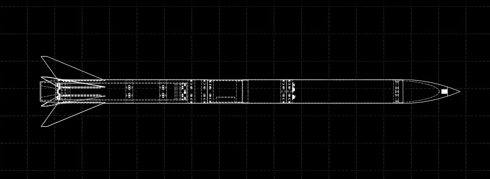
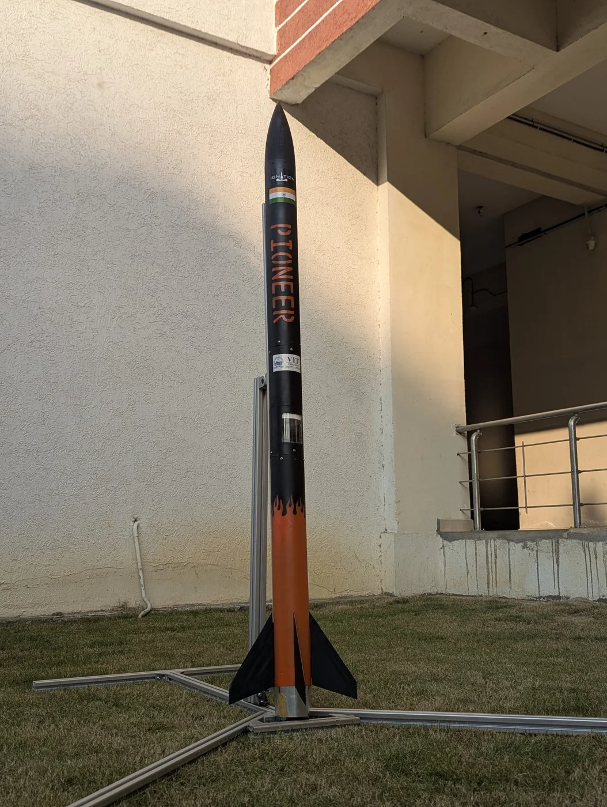
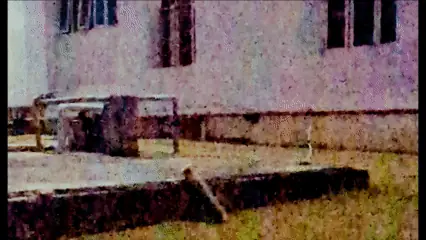

Technical leadership
Directed four engineers on the Pioneer airframe and negotiated design compromises with other subteams.

Work/05 of 05Completed
Airframe lead for a 10,000 ft high-power rocket. Four engineers, tight tolerances, ground tests, and one failure traced to its root.
I directed a four-person airframe subteam through the full mechanical life of the Pioneer launch vehicle. I set design-for-manufacture and GD&T guidelines so the composite tubes and CNC aluminium centring rings fitted first time, and worked with the avionics and recovery teams to settle the space compromises between the avionics bay, the dual-deployment recovery tubes and the motor retention bulkheads.

Move over the drawing to magnify it. Each marker opens a note about the part I owned there.
To make sure recovery worked without rupturing the airframe, the team built a controlled ground ejection rig. Ejection charges were sized from pressure calculations so the shear pins released cleanly while the avionics bay seals were protected. Fin flutter and transonic drag were checked with OpenRocket and CFD to confirm the centre of pressure stayed safely behind the centre of gravity.

During a static motor test, an avionics connector disconnected. I led the root-cause analysis and traced it to radiant heat from the motor casing softening the connector mount. The fix was high-temperature silicone thermal barriers and positive-locking, vibration-proof harnesses, and the revised mounting practice was carried into later builds.
A dropout became a design rule: locking connectors and thermal barriers near the motor.
Directed four engineers on the Pioneer airframe and negotiated design compromises with other subteams.
Bulkheads and airframe bolt patterns in SolidWorks, sized with analysis for strength to weight.
CFD, FEA, pressure and vibration checks with guidance from manufacturers and mentors, defended at PDR and CDR.
Traced the connector dropout to heat and led the change to mounting and thermal isolation.